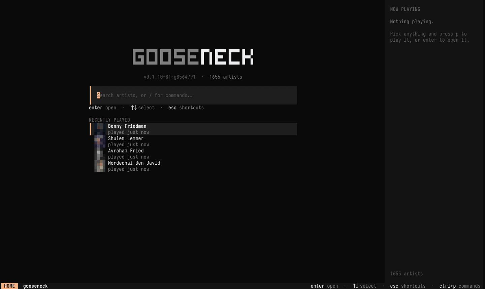

Jump between the main pages with the number keys:
| Key | Page | What's there |
|---|---|---|
| 1 | Home | A search prompt and your recently played artists. Start typing to search, or type / for commands. |
| 2 | Library | The whole catalog as a grid or list. tab cycles tags, c cycles catalogs. |
| 3 | Queue | What's playing and what's next. |
| 4 | History | What you've played, plus a Listens tab from your scrobble log. |
| 5 | Downloads | Everything saved for offline play. |
Opening an artist shows Albums, Singles & EPs, Top songs and Related artists (tab switches section). esc goes back.
goose tui can open straight to any page, tab and filter. Tab names match by any unique prefix, and a typo is an error before the screen opens. goose tui --help lists them all.
goose tui library --tab chasidish # tags: all, famous, chasidish, israeli, … goose tui library --catalog mine --filter av # one catalog, filtered goose tui artist "8th Day" --tab singles # albums, singles, songs, related goose tui album "8th Day" lucky # title, fragment or number; esc goes back to the artist goose tui history --tab listens # recent, top, listens goose tui downloads --filter shwekey goose tui --filter shwekey # home, search already typed
--filter works on home, library, downloads, artist and album pages.
| Key | Action |
|---|---|
| hjkl / arrows | Move |
| enter | Open, or play from here in a tracklist |
| esc | Back |
| / | Search / filter the current page |
| tab | Next section (artist page) or tag (library) |
| p a A s | Play · add to queue · play next · shuffle |
| P S | Play / shuffle everything by this artist |
| space n N | Pause · next · previous |
| [ ] · { } | Seek ∓10s · ∓60s |
| - + | Volume |
| r | Repeat: off → all → one |
| D | Download the selection for offline play |
| m | Endless radio from the selected artist |
| c | Cycle catalogs (library) |
| ctrl+p | Command palette |
| t | Theme picker with live preview |
| v · i · b | Grid/list · art on/off · sidebar |
| ? | Help |
| q | Quit (music keeps playing; goose stop stops it) |
This site knows a few of these too: ctrl+k or / opens search, and t cycles themes.
ctrl+p opens a fuzzy list of every action available on the current page, like add-to-catalog, radio, download or theme. From the home prompt you can also type them as /commands.
On terminals that speak the Kitty graphics protocol (Kitty, Ghostty) you get real images. Everywhere else, including tmux, gooseneck draws colour half-block art. Force a mode with GOOSENECK_IMAGES=kitty|halfblock|off, or press i to hide art. Prefetch pictures for a whole tag with:
goose cache warm --tag famous
On wide terminals a now-playing sidebar shows the current track, progress, volume, repeat mode and when the track will scrobble. Toggle it with b.
The player is a background mpv process that outlives the TUI on purpose. Reopen goose any time and you're back in control. To actually stop:
goose stop # stop and clear the queue goose quit-player # shut the background player down